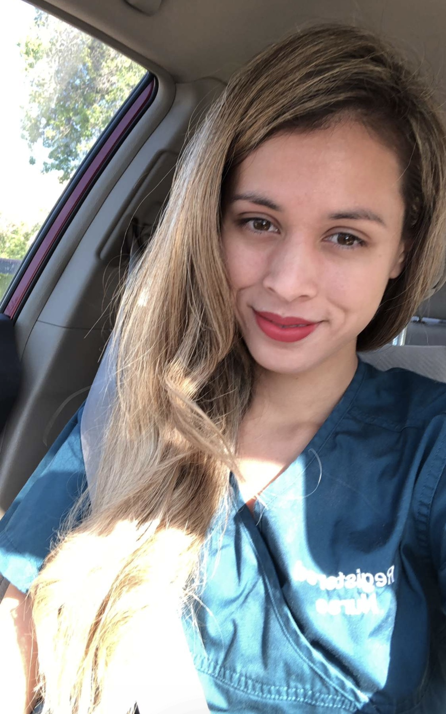

Hello, my name is Katherine Rizzo, and I am a dedicated nursing professional with over nine years of diverse experience in healthcare. I began my journey in nursing after graduating with a Bachelor of Science in Nursing (BSN) from California State University, Dominguez Hills.
Passionate about advancing my expertise and leadership in nursing, I am currently pursuing a Family Nurse Practitioner (FNP) degree at the same institution.
My career started in telemetry, where I spent four years honing my skills in monitoring and analyzing patients' critical data. In pursuit of broader clinical experience, I transitioned to
the Post Anesthesia Care Unit (PACU) at Cedars Sinai Medical Center.
For the past five years, I have been a Clinical Nurse III, a role that demands both acute clinical judgment and exceptional patient care in a fast-paced environment.
